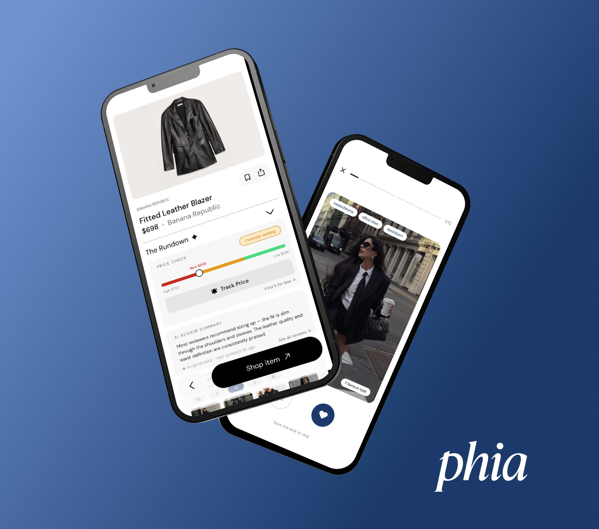

Phia x Design Meetup: Designathon Finalist
At a glance Phia and Design Meetup ran a two-round designathon in April 2026 around making shopping more personal, and I made it to the finals. For the semifinals, I created The Rundown: AI-powered insights inside each product page. For the finals, I designed Style Edit: a gamified swipe-card feature for building your style profile.

Overview
Phia is an AI-powered personal shopping assistant that helps fashion shoppers find the best prices across thousands of new and secondhand retailers. The Phia x Design Meetup Designathon drew 500+ applicants, narrowed to 80 semifinalists and 15 finalists. I made it to be one of the 15 finalists, and worked on two different concepts across the rounds.
The Rundown
The Challenge: Design a feature for a shopping app that makes users smarter shoppers. Focus on one of the following:
- Finding what shoppers love
- Saving money
- Saving time
- Making confident shopping decisions
Identify a frustrating shopping moment and redesign it into a smarter, faster, more enjoyable experience.
Format: One week to prepare. Final deliverable was a two-minute pitch video.
I designed The Rundown, a set of AI-powered insights that live directly inside each product page. It brings together price check, AI review summary, and real photos, all in one place:
- Price check: Surfaces the lowest prices across new and secondhand options, in one glance.
- AI review summary: Pulls sentiment, common pros and cons, and the real questions shoppers care about out of hundreds of reviews.
- Real photos: A gallery of photos from real shoppers, organized by size, so people can see how the product actually looks.
Together, these help people decide without scrolling endless reviews, hopping between tabs to compare prices, or guessing how something will look in their size.
Outcome
A 2-minute walkthrough of my idea and pitch, with the prototype walkthrough at the end. This is the full submission video I sent in for the semifinal round.
Open prototype in Figma View the deck in Figma
FinalsStyle Edit
The Challenge: Design an end-to-end feature for Phia that addresses a high-friction shopping moment. The feature can span Discovery, Evaluation, and/or Post-purchase. It doesn't need to cover all three. The deliverable should demonstrate two to three use cases showing how the feature works in different contexts.
Format: 24 hours, start to finish. Final deliverable was a working prototype plus a deck, presented live to Phia's founders, product team, and lead product designer in a three-minute pitch followed by two minutes of Q&A.
While using Phia, I noticed it takes a while for the app to actually learn what a user likes. That gap creates two compounding problems: decision paralysis when too many recommendations pile up with no clear winner, and style misalignment when Phia's picks don't match the user's actual taste. Most personalization patterns either build signal slowly across many sessions, or feel too forced, like a style survey you have to sit through.
I wanted Phia to learn what the user likes quickly, but in a way that felt fun rather than scrutinizing.
That's where Style Edit came in: a gamified swipe-card feature for building your style profile. Users get a fun, low-effort way to tell Phia what they like, and Phia gets the signal it needs to recommend better.
I designed Style Edit to surface in three different moments inside Phia:
- Onboarding: The first personalization moment new users hit, so Phia starts learning their style right away.
- Explore page: A weekly drop-in that keeps Phia's read on each user fresh as their taste evolves.
- Recalibration: When a user clicks "see less" three or more times on items in "Suggested for You", Style Edit surfaces as a fun way to reset Phia's understanding of their style without making them fill out a survey.
Outcome
Below is the full deck I pitched live to Phia's founders, product team, and lead product designer. The slides walk through how Style Edit works end to end across the use cases I built.
Open prototype in Figma View the deck in Figma
Reflections
Learnings
This was my first time designing under real time pressure, and the biggest lesson was learning to think and commit to ideas fast. The designathon also included a feedback session with Phia's founders and their team, which was a great example of working on something, getting honest stakeholder feedback, and iterating and making adjustments from there before the final pitch.
Challenges
Scoping under time pressure, especially during the 24-hour finals design sprint. Deciding what was in or out of scope and committing to the idea before designing took longer than I'd like. If I did this again, I'd lock my idea in earlier and start designing sooner.
What worked
My business background helped me think end-to-end and stay grounded, especially for the finals brief which asked for a feature spanning multiple shopping moments. The designathon also allowed AI use, so I leaned on Claude to ship template iterations faster and free up more time for design decisions.
Takeaway
I came away genuinely inspired by everyone else's ideas. Even with similar feature ideas, every execution was different, and it was so cool to see how differently we all thought through the same prompts. Designathons are a great way to grow fast and practice designing under real-time pressure.
Other Projects

AI Assistant for Google Maps
Designing an AI assistant for place discovery to reduce decision fatigue.

Yammii: Online Order Revamp
Simplifying and modernizing Yammii's mobile order flow.

Hemi: A Personal Reflection Journal
Designing and vibe coding a digital journal, from sketch to deployed web app.